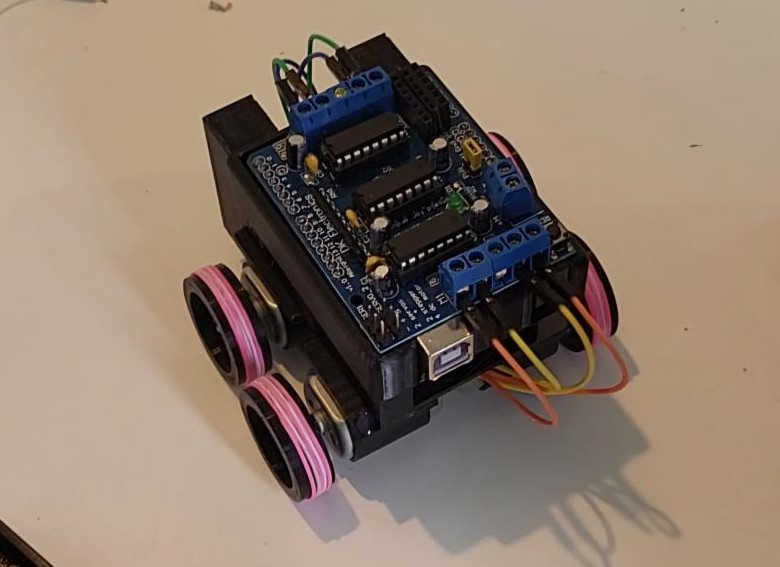
The Micromouse project was built for the ElecSoc Micromouse Competition held in April 2024. In just a few weeks, our three-person team designed, built, and programmed a miniature robot that was meant to be capable of basic maze navigation.
We took on the full stack challenge, developing the hardware, firmware, and software ourselves. The goal was to demo a functional robot that could sense walls, make decisions, and move accordingly within a maze environment.
Mechanical Design & Manufacturing: I was responsible for designing and building the physical structure of the robot, including the chassis and mounts for key components like the motors, sensors and battery. Motor Systems & Safety: I worked directly with the drive motors and helped implement safety switches to protect the circuitry during testing. Hands on Electronics Support: While my main focus was mechanical, I also assisted with soldering components and helped bring the hardware together during the integration stage.
We brainstormed a variety of maze-solving algorithms, including flood fill, hand-on-wall, and A*,
evaluating their feasibility for future iterations.
Throughout development, we used diagrams and schematics to collaborate on sensor layout, motor control,
and pathfinding logic. One software we used quite a lot during this project was Tinkercad, which was useful in
simulating the electrical components interacting together.
Our teamwork across mechanical, electronic, and software roles was essential to getting a functional prototype
up and running on time.
As part of the landing gear selection for our UAV, I conducted Finite Element Analysis (FEA)
simulations using SimScale to test how the landing gear we chose would respond under harsh landing
conditions. I also trialed two different carbon fibre settings; a generic carbon fibre vs 3k twill
carbon fibre which was the type used in our landing gear.
The main objective was to find out if our landing gear could endure multiple impacts during real-world
operation without failure with a factor of safety. I simulated a variety of landing scenarios, including
ideal landings and impacts at angles, at different descent velocities.
Key Simulation Scenarios and Results:
Vertical landings at -1 m/s, -3 m/s, and -4 m/s showed that the 3K twill carbon fibre consistently stayed
below its tensile failure limit (Max Von Mises ≈ 2.65 GPa < Material Max 3.45 GPa), while regular carbon
fibre remained within its lower strength limit (≈ 400 MPa < 650 MPa).
In angled landings, such as a 10° backward tilt and 5° sideways tilt at -3 m/s, the results showed that
the regular carbon fibre was approaching its stress limit (≈ 618 MPa and 1.4 GPa), whereas the 3K twill
variant showed greater resilience.
These simulations showed that 3k twill carbon fibre had a higher tolerance to stress concentrations
during impact, and that the landing gear that was tested would be suitable for our UAV.
In order to ensure accurate results, I used a dynamic simulatin setup instead of the static tests that
could be performed in CAD such as Fusion 360. The dynamic simulations offered realistic impact velocities,
mesh refinement, and physical contact restraints between the ground and the landing gear wheels.
I also implemented result control probes in SimScale to measure the max von Mises stress in regions that
were predicted to be under the most load and stress during the impact.
The transport box, which also serves as the Ground Control Station (GCS), is a custom built
wooden structure designed to house the disassembled UAV, along with spare parts, repair tools,
batteries, and pre-flight checklists. It was engineered to fold up compactly and comply with the
strict maximum outer dimensions of 1.5 x 0.6 x 0.6 metres, as required by the UAS Challenge Competition.
For ease of transport, the box features two handles on either end, enabling it to be carried by two people.
Alternatively, it can be pulled by a single person using two wheels mounted on the opposite side.
One of the walls unfolds to form a pop-out desk, providing a stable workspace for laptops, tablets,
and telemetry equipment used to monitor the UAV's flight systems and execute checklists. A pull-out drawer
has also been integrated into the base of the box, allowing for organized storage of tools, components,
and other small essentials.
The GCS is a crucial part of the UAV system that was designed not just for transport and protection, but also to
serve as a mobile operations hub during our missions.
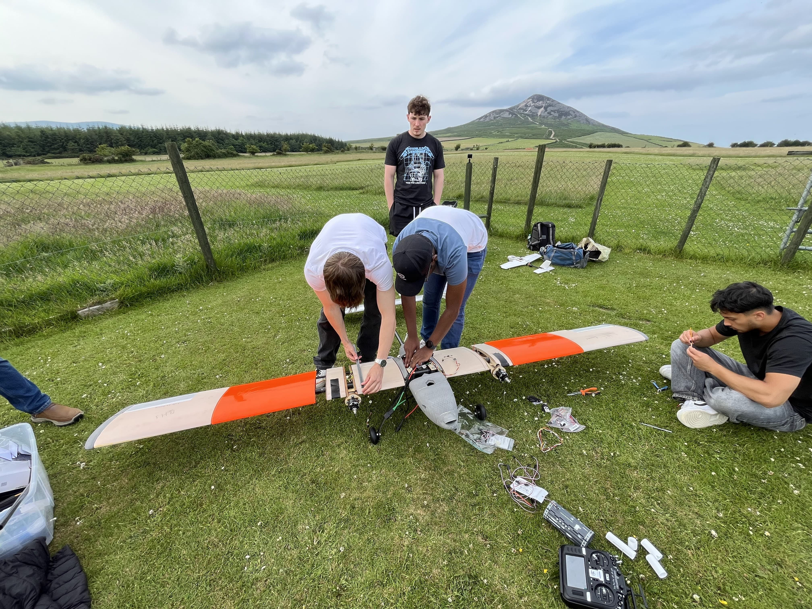
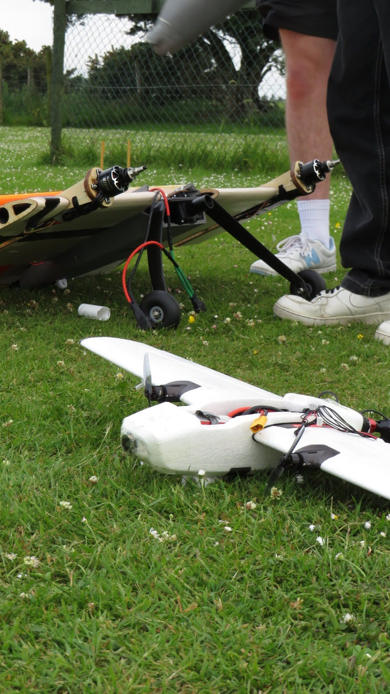
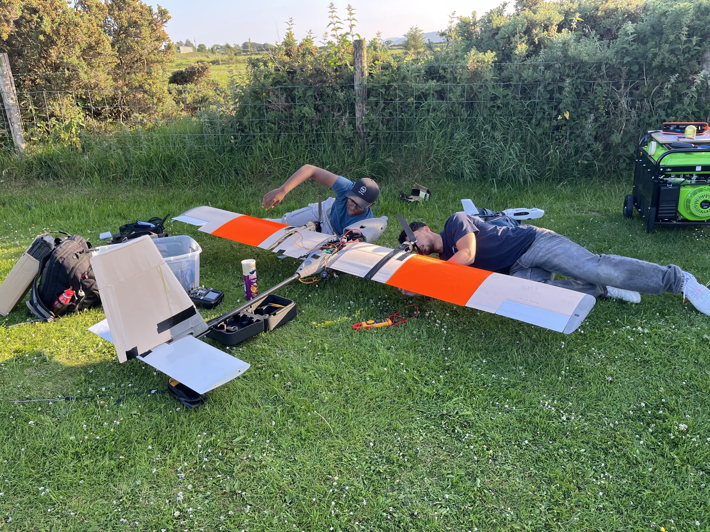
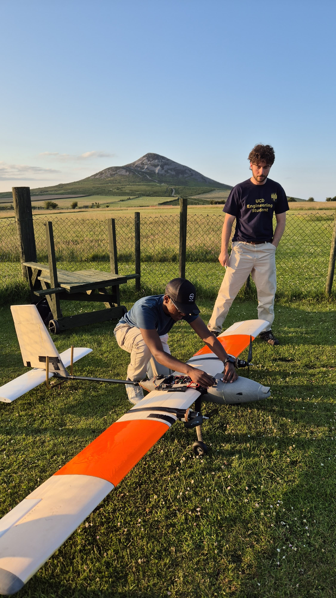
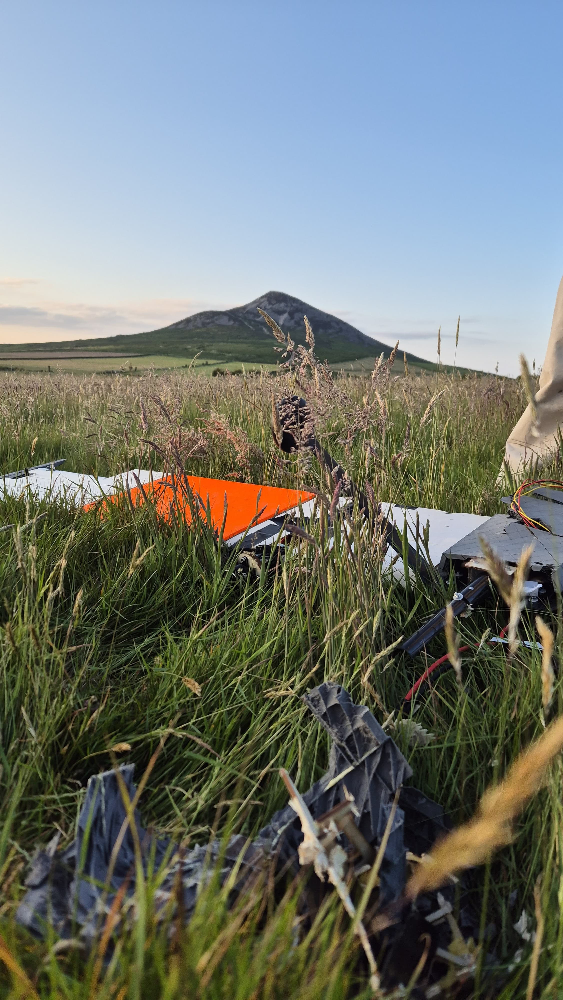
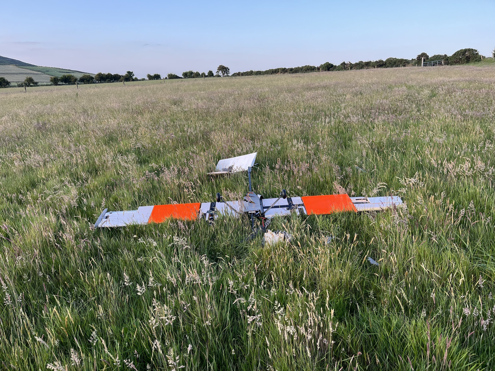
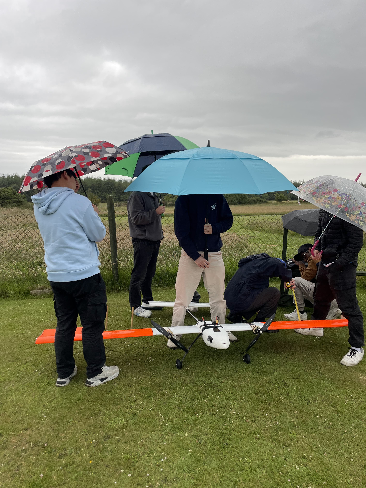
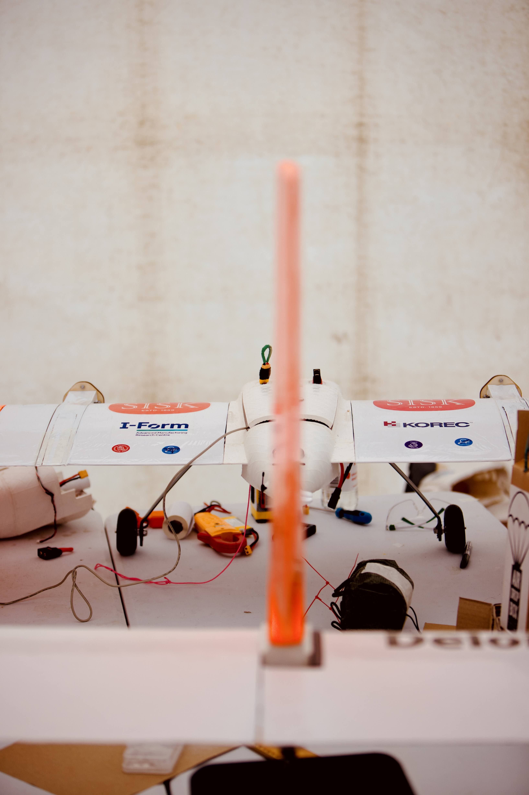
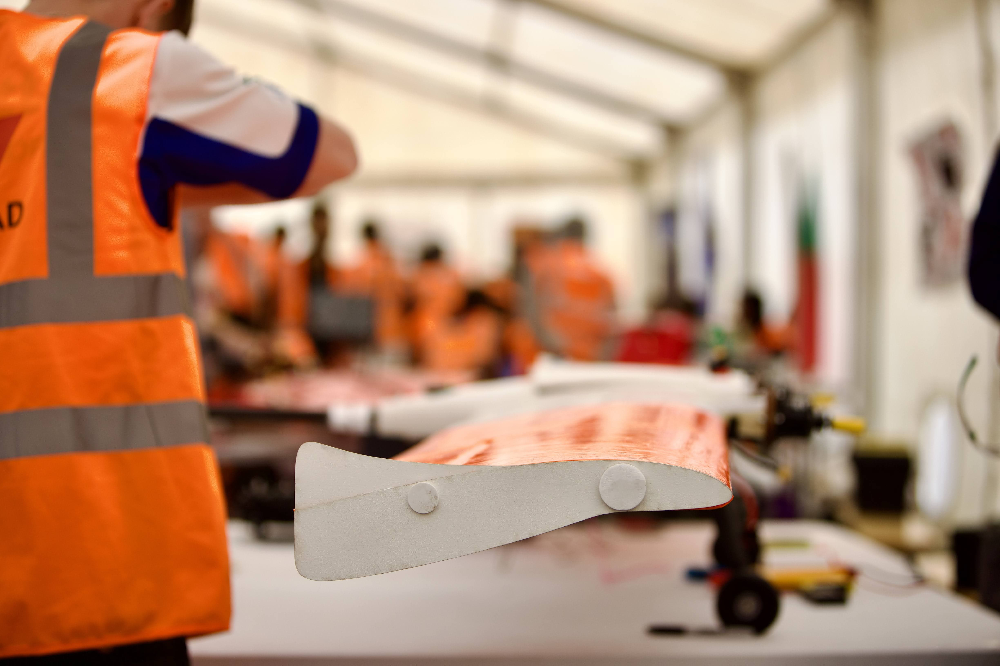
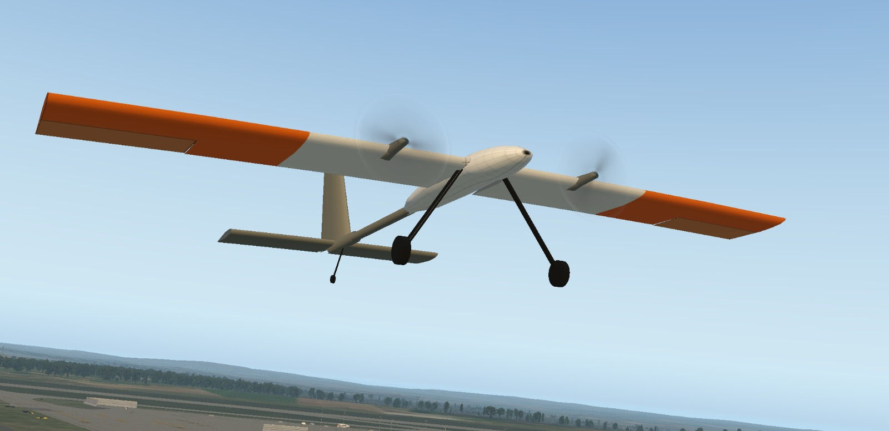
rayfoysal@gmail.com
+353 85 103 1313 (IE)
+61 432 743 233 (AUS)